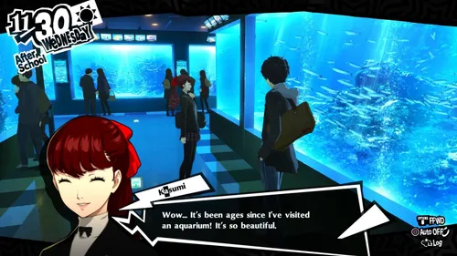

favorites
JRPG 1
Persona 5
More about me as an overall person
Fun fact about me: I love video games.
To be honest, it's more or less the reason I chose to major in IT of all majors. Not to mention the fact that i've been
playing around with technology in different ways but mostly through video games.
What are some of my favorite video games/franchises I've experienced myself
Celeste is an emotional game covering serious topics like mental health and using a mountain as a metaphor as one's personal struggles
you can play it for the story, or if you like difficult platforming, there are b side and c side variants of those levels

For more information about the game, for those who are interested here is a link to a video that shows someone who actually completed everything
reviews
2 of my other favorite franchises
Fire emblem is a classic startegy JRPG that i've known for a very long time
My first fire emblem game was fire emblem 8 and the game that introduced me to the rpg genre.
I don't want to get too much into it really but all I should say is that if you ever want to get into the series
this is one game i reccommend to get into the series.
Most if not all the games in the series are worth playing if you ask me. Some are harder than others, others have more story focused gameplay and vice versa for that matter. It's a mixed bag
where do i begin?
What other JRPG do i like alot/am playing through
Another JRPG i really love is called persona. I haven't completed a persona game, nor do i have much experience with the persona series.
I want to complete one persona game at somepoint. As far as i'm concerned, it's up to you where you start with the persona series.

Here are videos to see if you maybe want to get into the series
persona 5 royal review